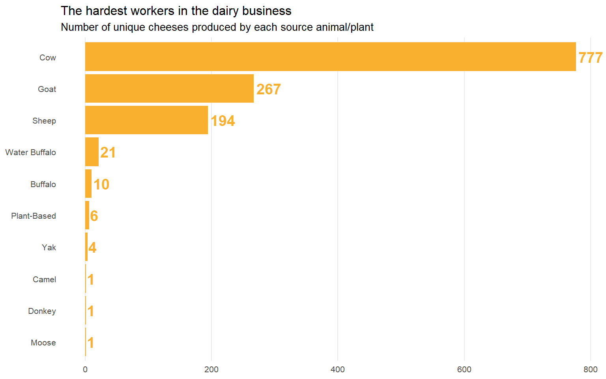
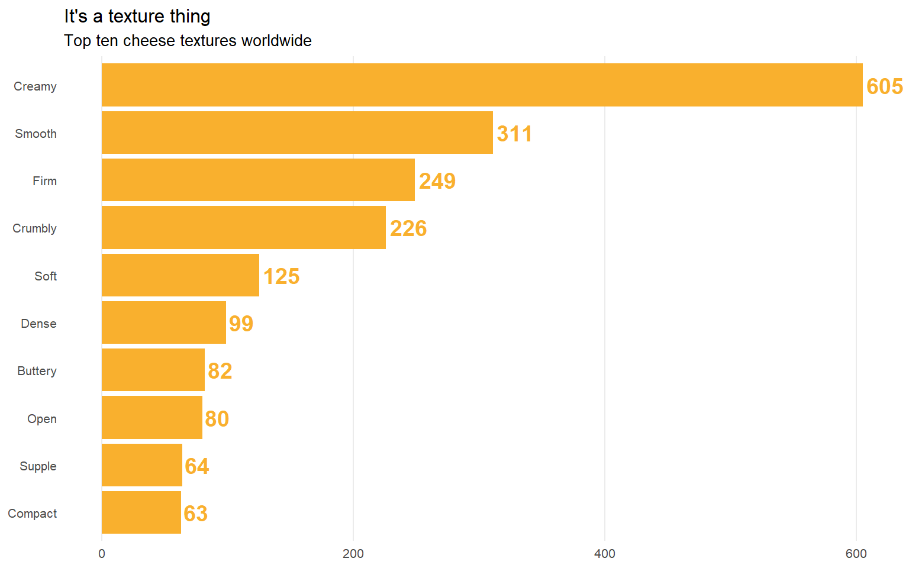

$color
[1] "white"
$value
[1] "Cow"
$icon
[1] "droplet"The Cheese Explorer | TidyTuesday
Data Viz
TidyTuesday
Dashboard
Row
$color
[1] "#f9b02e"
$value
[1] "Sweet"
$icon
[1] "eyedropper"$color
[1] "white"
$value
[1] United States
61 Levels: Slovakia Norway Mongolia Mauritania Macedonia Lithuania ... United States
$icon
[1] "globe-americas"Row
Column



Column
Welcome to TidyTuesday! This is a quick demonstration of the new Quarto dashboard functionality, which allows for quick-and-easy construction of data visualization dashboards with a markdown-like syntax. If you want the full source code for this dashboard (only about 200 lines!!), click here.
Of course, if you want to discuss the project, reach out on Discord or say thanks by buying me a coffee. Enjoy!